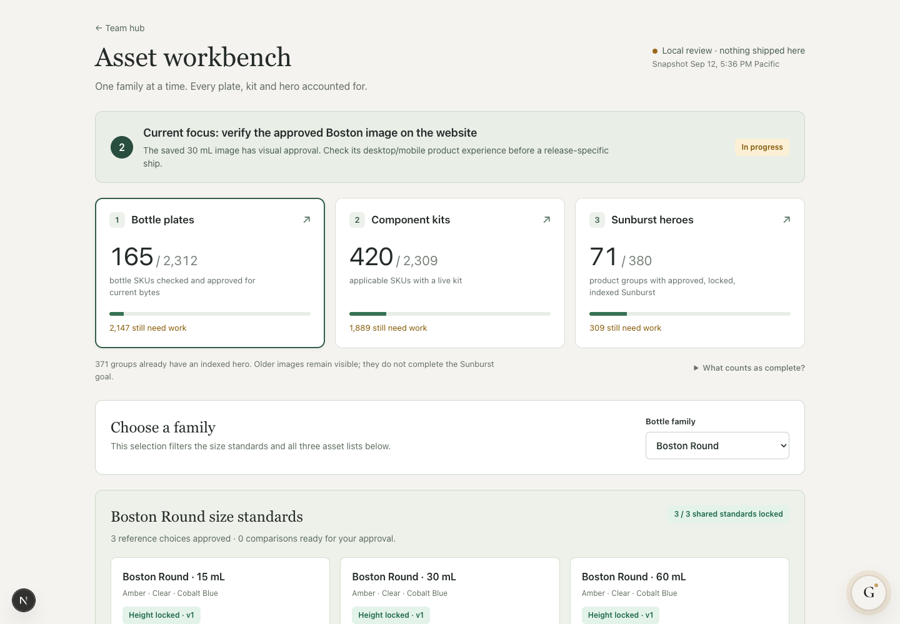
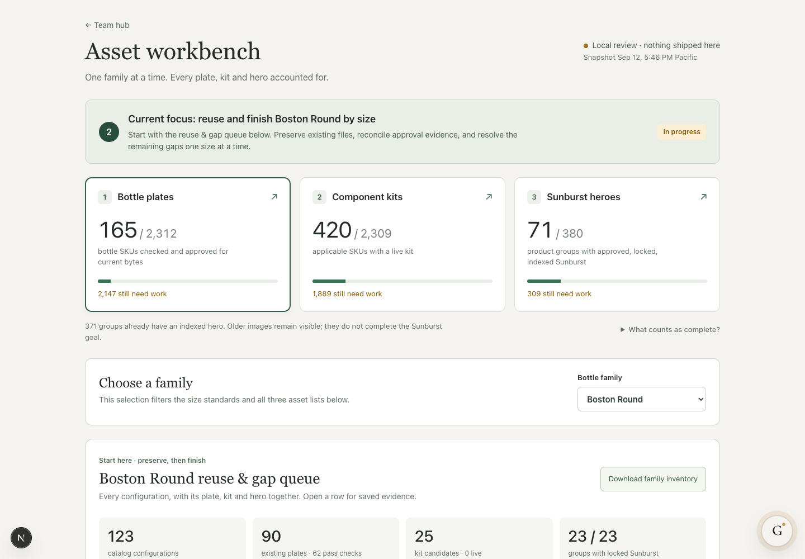
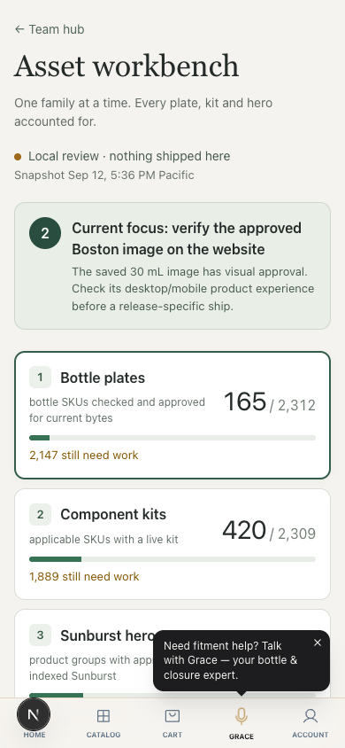
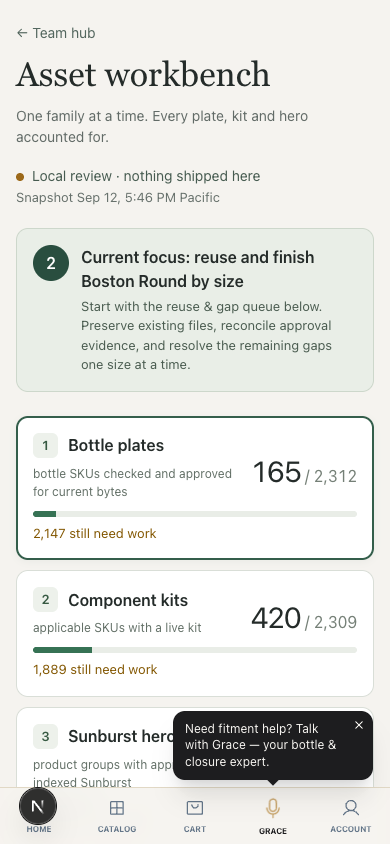
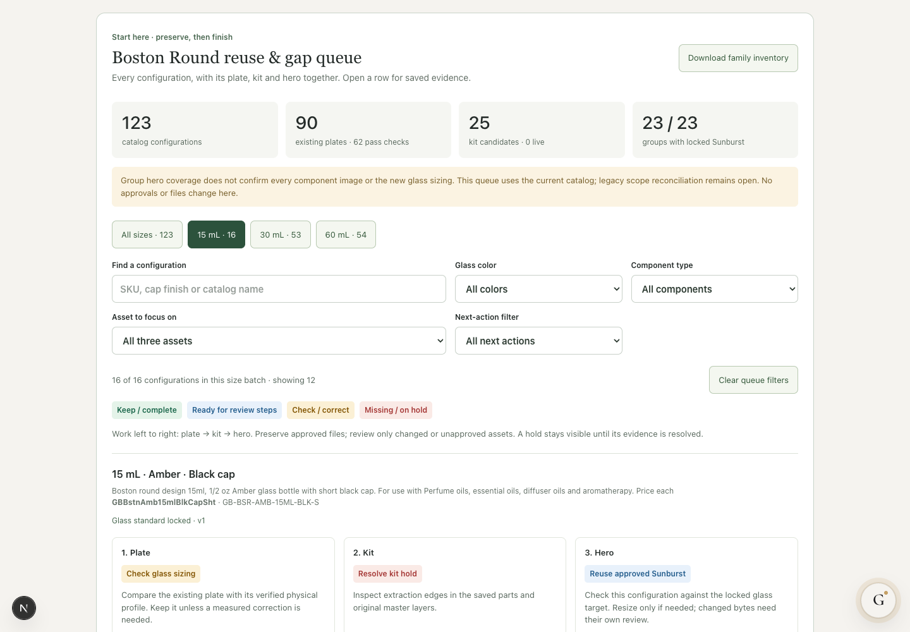

The workbench now accounts for 123 configurations on three size batches: 16 / 53 / 54. Existing asset evidence and completion counts are unchanged.
Open the queue · Download inventory





No image resizing, generation, approval or publication was performed. This is a current-catalog action queue, not a completed legacy catalog reconciliation.